(1)你是学生吗 (Nǐ shì xuéshēng ma, Are you a student?Ты студент?)
(2)我爱吃水果 (Wǒ ài chī shuǐguǒ, I love to eat fruit.Я люблю есть фрукты.)
(3)这件衣服真漂亮 (Zhè jiàn yīfu zhēn piàoliang, This piece of clothing is really beautiful.Эта одежда очень красивая.)
(4)你们去哪里 (Nǐmen qù nǎlǐ, Where are you going?Куда вы идёте?)
(5)请坐 (Qǐng zuò, Please sit.Садитесь, пожалуйста.)
(6)雨大吗 (Yǔ dà ma, Is the rain heavy?Сильный дождь?)
( B ) ( ) ( ) ( ) ( ) ( )
汉字书写（八）Chinese Character Writing (VIII)Написание иероглифов (VIII)
1学练合体字及其偏旁Compound Character and Radical PracticeПрактика: составные иероглифы и их ключи